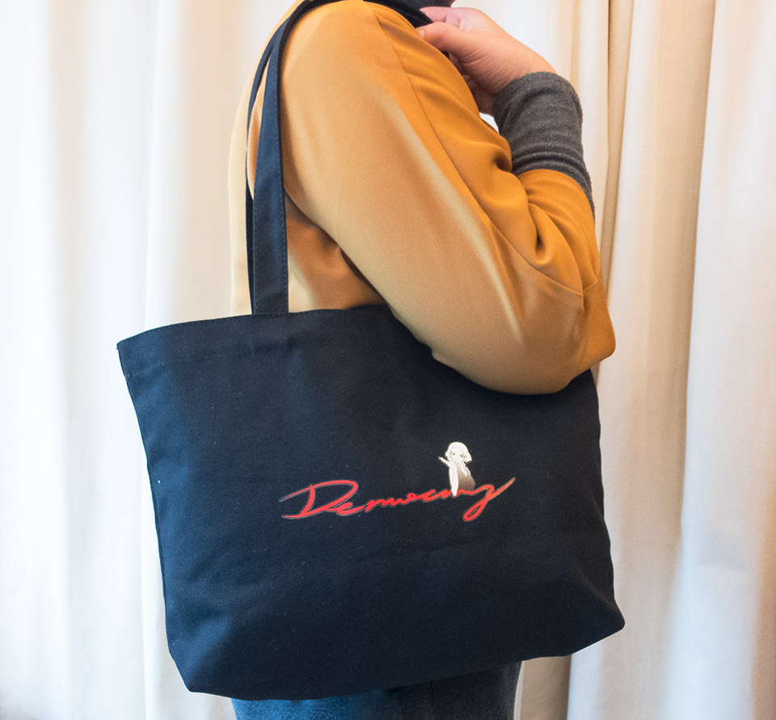

democracy de cafe
我想關注的議題很多
但為了溫飽已佔用大半時間
有時想跟朋友聊聊議題
得到的卻是沉默或不在乎的眼神
$689 ， 寬39公分，高26公分，T型袋底寬8公分。放入13吋筆電與錢包筆記本綽綽有餘。
立刻購買在318之後，我們一直在思考，大部分的人為了忙於工作，能夠用在關心生活議題的時間太有限了，而一談到政治，大多數的反射動作就是「政治很髒不要碰」，或是「xx歸xx，政治歸政治」。對很多人來說，政治看起來很遙遠，跟自己沒有太大的關係。也常常覺得那些滿口議題的人似乎都是政治狂，以後大概都是要出來選的吧？但實際上我們生活的種種，若仔細去追根究底不斷的問為什麼，會發現他背後的根源其實都跟政治有關。
台灣長期的教育氛圍總叫我們不要理政治，但這其實跟民主政治所主張的公民意識是背道而馳的。不過現況就是如此，於是我們陷入苦思：到底該怎麼做，才有辦法讓更多人可以用更簡單的方式瞭解社會議題，體會生活即是政治，進而關心政治呢？
立法委員是我們一票一票選出的民意代表，既然生活的所有事物背後都跟法律有關，而法律是由立法院審查訂定的，那從就從監督立委做起吧？
我們想嘗試鼓勵大家一起去看立法院議事影片，並彙集大家挑出覺得荒謬的打點。於是我們做了「國會調查兵團」網站，讓一般民眾可以在這個網站上直接投稿立委的表現。我們希望透過這個方式，鼓勵大家可以去看立法院議事影片紀錄，把看到的立委表現記錄在這個網站，讓更多人看見我們立法院裡面的真實樣貌。
但人的時間真的很有限，忙於工作忙於人際關係又或是忙著跟家人相處，一天能夠花15分鐘關心一下政治，已經是極限。更不要說立法院議事影片又臭又長又無聊。這樣的門檻還是太高了。
我們再次問問自己，有沒有可以更快吸收議題現況的方式呢？我們進一步做更多的嘗試，像是經營「公民廟口-立委在做天在看」粉專，傳播經過剪輯的立委質詢影片，試圖降低理解質詢內容的難度，讓更多人理解觀看立委質詢表現的重要性。我們成立了「杜老爺小酒館」，試圖用漫畫的方式，表達對時事的看法。我們開了「蒂瑪小姐咖啡館」粉專，試圖以對話小說的方式對社會議題進行思辨。
在這個過程中，我們深刻的體會到我們的教育從來沒有告訴我們，身為一個公民，應該了解什麼，應該思辨什麼。從威權邁向民主的過程，在表面上看起來太過和平了，這一切似乎來得太容易太理所當然，於是我們不曾意識到，戒嚴結束只是不到30年以前的事情。而這樣的歷史背景，也導致台灣教育長期以來並不注重公民意識的培養。這在過去的威權時代，可以理解。
但展望未來，如果我們都認同民主的價值，那是否我們得捫心自問，我們有足夠的公民意識讓我們的民主走得長久嗎？所以我們努力去了解「什麼是民主」，並依此展開對民主的想像，走出屬於我們這個時代的公民行動。
我們是「國會調查兵團」，我們相信政治討論不是名嘴、立委的專利，而是生活的一部分。我們認為監督立委、監督政府是每一個人都有能力做的事，而這一切我們選擇從自己做起，我們相信只要我們願意行動，每個人都有能力讓這個社會變得更好。
持續投入政治行動除了需要熱情，也需要經濟支撐。2014/9~2015/10這段時間，「國會調查兵團」用純志工模式完成了一個網站（cic.tw）、每天盯ivod並剪輯了152支立委質詢影片、產出了破百篇的文章、產出八十來篇對時事嘲諷的圖文。針對食安修法找了國民兩黨立委做了食安訪談，並整理逐字稿紀錄公開於網路上。以蒂瑪小姐咖啡館粉專為主辦舉辦了5場的現場D day活動。
我們對發展公民可參與的政治行動、推廣降低政治參與門檻有著極大的熱情，但人終歸需要生活。過去，蒂瑪小姐咖啡館曾經於2016年1月出版實體書，當時我們向公民覺醒聯盟提出「國會調查兵團立委選前密集監督計畫」專案企劃，以支應國會調查兵團計畫一年的人事與軟硬體費用。
長期來看，我們也必須要持續透過銷售以取得自我商轉的可能。我們感謝公民覺醒聯盟願意資助國會調查兵團計畫，但未來我們必須要靠自己的能力活下去，才能讓兵團計畫持續前進。
「蒂瑪小姐咖啡館」要出周邊商品了。如果你願意支持我們繼續寫下去，如果您也認同自己的公民意識自己救，買一個隨手袋，讓我們可以陪伴大家一起監督國會，繼續走下去。
寬39公分，高26公分，T型袋底寬8公分，所以當底撐開時高度會略小於26公分。可以放入一台13吋筆電外加錢包筆記本綽綽有餘。

一、長期監督立委，持續產出監督影片。
每天要接收的訊息很多，每個人一天可能只有5~10分鐘可以關心國會，我們透過固定人員每日監看，爬梳一天重要的質詢內容，篩選出值得關注的議題，剪輯成影片並撰寫容易理解的文案，讓更多人可以輕鬆地理解國會最近正在討論什麼。這部分是整個計畫中最吃編輯人力的部分。每月所需費用約5~6萬。
二、國會調查兵團網站維護
兵團網站必須跟著實際使用狀況做改版，遇到網路攻擊時也必須要有人可以及時查詢問題並做緊急處理。由過去無償撰寫網站的志工繼續協助這個部分的後續維護，目前改採外包形式。維護人員與定期硬體設備租用，每月所需費用約2~3萬。
三、建立公民智庫，彙整更多公民對於不同議題的看法與建議。
針對每周相關議題，與有相關專長的贊助者進行信件聯繫，收集大家的意見，並且整理出相關的論述。這部分需要固定的編輯人力進行聯繫與彙整的作業，每月所需費用約2萬。
四、長期產出蒂瑪小姐咖啡館文章
持續跟著生活上的新聞議題，撰寫文章推廣公民意識。每月所需費用約1萬。
不是，我們沒有去登記非營利組織（人民團體）。因為申請登記人民團體有許多的限制，像是發起成員必須要30人以上，全國性協會發起成員必須要有來自7個以上縣市的人，必須要召開會員大會選出理事監事等等，這些都不是兵團目前運作的人員所能夠負荷與處理的。
因此稅務的部份我們以另外登記工作室的方式處理。所有購買行為我們都會開發票。我們希望以自營自足、社會企業的方式讓「國會調查兵團」計畫可以持續進行。